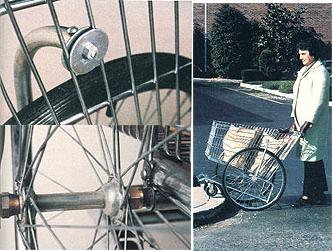

MOTHER EARTH NEWS STAFF
Top left: The top of a brace as seen from the inside of the cart. Bottom left: Close-up of the wheel axle, showing the various components in place. Right: HereÂ
Mother's
version of the shopping cart is shown in action